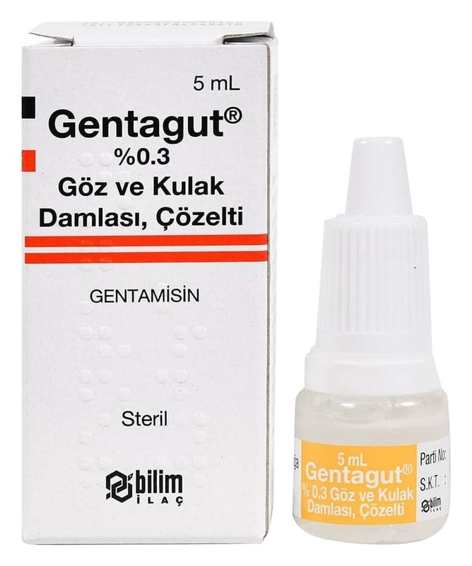

Gentagut % 0.3 Göz Ve Kulak Damlası, Çözelti, 5 ml

Ne için kullanılır
KT · Bölüm 1GENTAGUT, aminoglikozit antibiyotik grubundan olan gentamisin (gentamisin sülfat (balık peptonu) olarak) adlı etkin maddeyi içermektedir.
GENTAGUT, bazı organizmaların neden olduğu göz ve kulak enfeksiyonlarının tedavisinde ve göz ya da kulak travmasında enfeksiyon oluşumunu önlemek amacıyla kullanılır.
GENTAGUT, renksiz veya hafif sarı berrak bir çözeltidir.
Kendinden damlalıklı, şeffaf şişede 5 mL çözelti içermektedir.
GENTAGUT, topikal (bölgesel) olarak kullanılan bir ilaçtır.